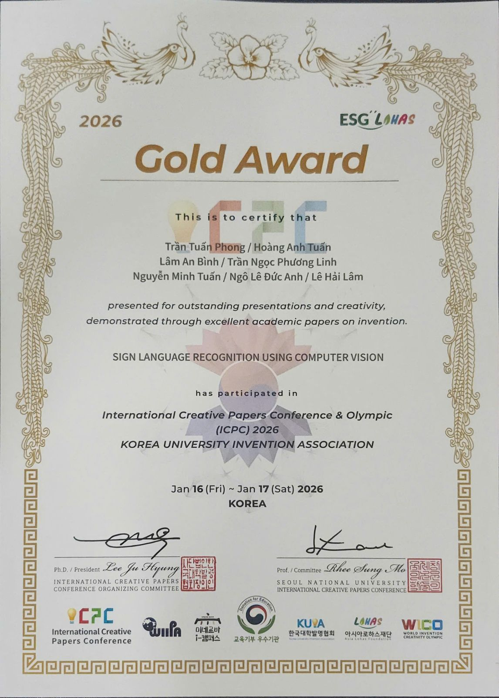
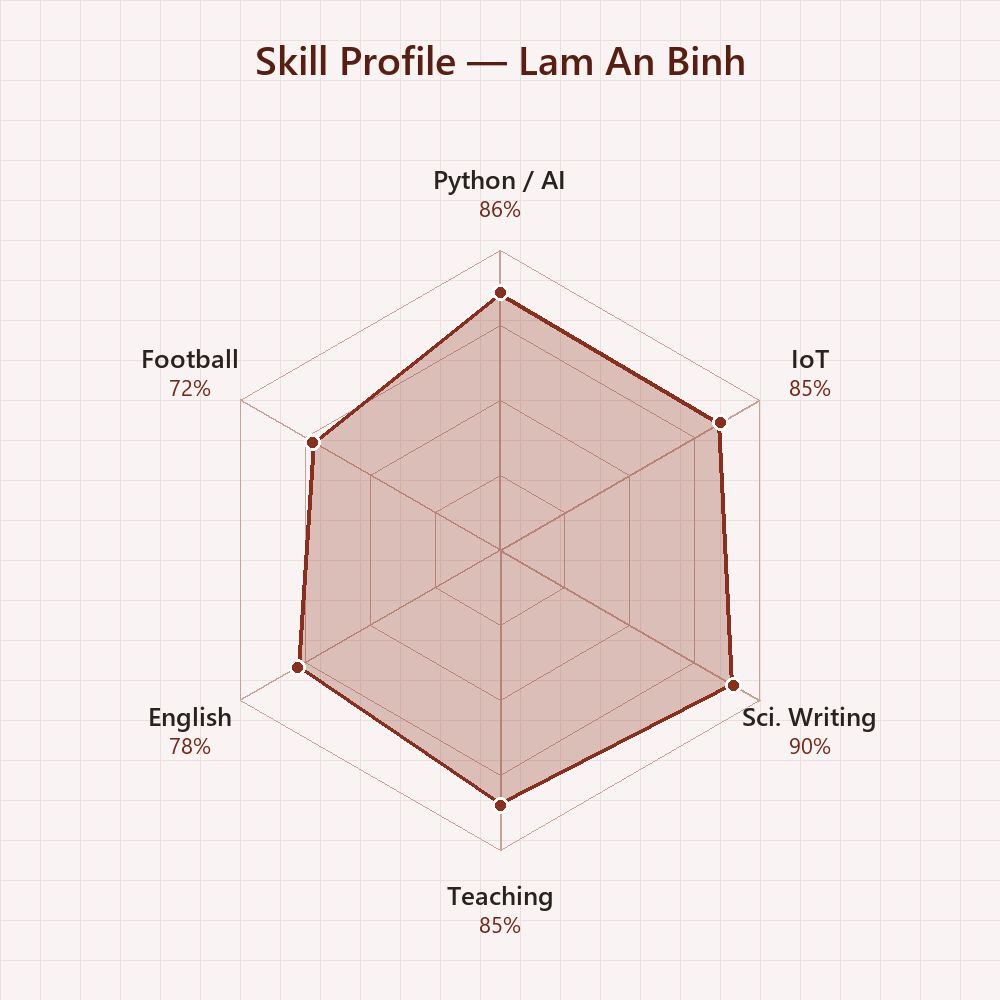
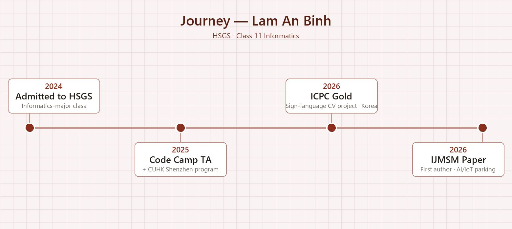

Giới thiệu
Mình là Lâm An Bình, học sinh lớp 11 chuyên Tin, trường THPT Chuyên Khoa học Tự nhiên (HSGS), ĐHQG Hà Nội. Mình quan tâm đến AI, IoT và các ứng dụng công nghệ giải quyết vấn đề đô thị: năm 2026 mình là tác giả chính của bài báo quốc tế về hệ thống đỗ xe thông minh ứng dụng AI và IoT tại Hà Nội, đồng thời cùng nhóm đạt Gold Award tại ICPC 2026 (Hàn Quốc). Mình tự phát triển phần mềm luyện từ vựng IELTS/SAT “Vocab Catalyst” tích hợp Gemini AI, làm trợ giảng và tình nguyện viên tại HSGS Code Camp, đạt danh hiệu “Học sinh 3 Tốt” cấp trường và tham gia nhiều dự án thiện nguyện.
“Thành phố thông minh bắt đầu từ những bài toán rất đời thường — như tìm một chỗ đỗ xe.”
Nghiên cứu khoa học
Applications of AI and IoT to Develop Intelligent Car Parking Systems in Hanoi, Vietnam
Nghiên cứu đề xuất hệ thống đỗ xe thông minh (IPS) cho Hà Nội – nơi hạ tầng đỗ xe mới đáp ứng 8–10% nhu cầu – sử dụng cảm biến siêu âm/địa từ kết hợp thị giác máy tính (OpenCV) để nhận diện biển số tự động, cập nhật dữ liệu chỗ đỗ theo thời gian thực và cho phép người dùng đặt chỗ qua ứng dụng di động.
Hoạt động ngoại khóa & Dự án
Sản phẩm cá nhân: Vocab Catalyst – phần mềm luyện từ vựng IELTS/SAT bằng AI
Ứng dụng desktop tự phát triển giúp luyện từ vựng cho kỳ thi IELTS/SAT: sinh bài tập bằng AI, giải thích lỗi sai tức thì, ngân hàng lỗi sai để tái luyện tập và lộ trình học cá nhân hóa — biến việc học từ vựng thành hành trình có kế hoạch, đo lường được.
- Ứng dụng desktop Python với giao diện CustomTkinter gồm 4 tab: Luyện tập · Ngân hàng lỗi sai · Lịch học · Nhắc nhở; dữ liệu lưu cục bộ bằng SQLite.
- Sinh bộ bài luyện theo kỳ thi (SAT/IELTS), chủ đề và dạng bài; trả lời sai được Google Gemini AI giải thích ngay và tự động lưu vào Mistake Bank để tạo bài tái luyện tập.
- AI tạo lộ trình học 7 ngày dựa trên kết quả gần nhất; tab lịch cho phép đánh dấu nhiệm vụ mỗi ngày và hệ thống nhắc học đúng giờ đã hẹn.
- Kiến trúc 4 lớp tách bạch: giao diện CustomTkinter → điều phối CatalystApp (threading, logic thích ứng) → lớp dịch vụ GeminiService + db.py → Google Gemini API và cơ sở dữ liệu SQLite.

Sản phẩm cá nhân: EDU-Bot AI – trợ lý luyện thi tương tác
Giải pháp kết hợp AI, IoT và Robotics: người bạn đồng hành tương tác giúp tối ưu việc luyện tiếng Anh chuyên sâu (IELTS/SAT) qua giao tiếp tự nhiên và phản hồi thông minh theo thời gian thực.
- Cá nhân hóa trải nghiệm: tự động điều chỉnh lộ trình và độ khó theo năng lực thực tế của người học.
- Tối ưu phản xạ giao tiếp: môi trường tương tác 100% tiếng Anh giúp xóa bỏ rào cản tâm lý khi nói.
- Số hóa kết quả: theo dõi tiến độ học tập chi tiết qua hệ thống dữ liệu trực quan.
Trợ giảng & Tình nguyện viên – HSGS Code Camp
Trợ giảng và tình nguyện viên tại HSGS Code Camp do Trường ĐH Khoa học Tự nhiên tổ chức, hỗ trợ dạy lập trình cho học sinh.
Chương trình trải nghiệm tại ĐH CUHK Thâm Quyến
Tham gia và nhận chứng nhận chương trình của Đại học Trung văn Hồng Kông (CUHK), cơ sở Thâm Quyến.
Thiện nguyện tại Bệnh viện Đa khoa Xanh Pôn (2026)
Tham gia tặng quà, động viên bệnh nhi có hoàn cảnh khó khăn tại BV Đa khoa Xanh Pôn; được Bệnh viện gửi Thư cảm ơn.


{kind=link}
{kind=link}
{kind=link}
{kind=link}
{kind=link}
{kind=link}
{kind=link}
{kind=link}
{kind=link}
{kind=link}
{kind=link}
{kind=link}
Các dự án thiện nguyện khác
Dự án hỗ trợ bệnh nhân nhi tại BV Đa khoa Hà Đông · Dự án chia sẻ cùng đồng bào vùng lũ Yên Bái · Nhóm “Ong chăm” xây trường tại Nghệ An · Từ thiện tại BV Hà Đông (lớp 9) · Thành viên đội bóng đá Trường KHTN.
Trải nghiệm ngoại khóa Tuyên Quang 2026
Chuyến trải nghiệm ngoại khóa tại Tuyên Quang cùng học sinh nhiều trường: sinh hoạt chuyên đề tại hội trường, giao lưu và các hoạt động làm việc nhóm.
{kind=link}
{kind=link}
{kind=link}
{kind=link}
{kind=link}
{kind=link}
{kind=link}
{kind=link}
{kind=link}
{kind=link}
{kind=link}
Thành tích & Giải thưởng
Giấy chứng nhận tham dự Olympic Chuyên KHTN (HSGS Olympiad)
Danh hiệu “Học sinh 3 Tốt” cấp Trường
Gold Award – International Creative Papers Conference & Olympic (ICPC 2026), Hàn Quốc
{kind=link}

Kỹ năng
{kind=link}

Sở thích & Quan tâm
Định hướng tương lai
Mình muốn theo đuổi ngành Khoa học Máy tính với trọng tâm AI ứng dụng cho đô thị thông minh. Kế hoạch tiếp theo của mình là mở rộng nghiên cứu bãi đỗ xe thông minh thành mô hình thử nghiệm thực tế, đồng thời tiếp tục đồng hành cùng HSGS Code Camp để lan tỏa lập trình tới nhiều bạn học sinh hơn.
Hành trình
Từ thiện tại Bệnh viện Hà Đông (lớp 9); trúng tuyển lớp chuyên Tin, THPT Chuyên KHTN (HSGS).
Bằng khen Học sinh xuất sắc lớp 10; trợ giảng & tình nguyện viên HSGS Code Camp; nhận chứng nhận chương trình ĐH CUHK Thâm Quyến; danh hiệu “Học sinh 3 Tốt”.
Gold Award tại ICPC 2026, Hàn Quốc (01/2026); công bố bài báo quốc tế IJMSM về bãi đỗ xe thông minh với vai trò tác giả chính (05/2026); thiện nguyện BV Xanh Pôn.
{kind=link}
